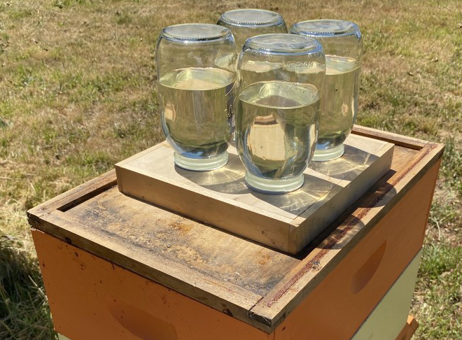

Overview
There are times when you need to feed your colony. Hive feeders are used to supply sugar-water based feed.
Three varieties of those feeders are discussed below.
Entrance Feeders
Entrance feeders (commonly called Boardman feeders) are placed on the entrance to the hive. I prefer the ones made from wood and sheet metal to those made from plastic. The plastic ones seem to become brittle over time and crack. Usage NotesUsage at the Hive's EntranceThese feeders work, but they are not recommended for general use at the hive entrance as they can entice other pests into the hive: including wasps, hornets, and other dangers to the colony. Usage Inside the Hive Entrance Feeder Atop the Hive These feeders can also be placed inside the hive, and they work quite well there. You can set them atop the upper hive box on the inner cover, and then an empty box is added to surround them before adding the telescoping cover. This makes the feeders work as hive-top feeders. With a medium empty hive box around them, the feeders can only use pint jars. A deep hive box is required for using quart jars. In some situations, this is preferred to the hive-top feeders as they can be removed easily for hive inspection, and you don't have to worry with spilling any of the contents into the hive. Difficulty Removing the LidsAt times, it can be quite difficult to remove the lid from a jar which has been in the hive. I don't know if the bees seal it up with propolis or the sugar simply locks up the threads. In either case, you can stand there far too long trying to get the jar open to re-fill it. This can be especially problematic in the Fall when robbing is prevalent. Instead, consider filling different jars and taking them with you when replacing existing jars (see also New Jar Lids, below). Inverting the Jar & Leaking DropsWhen the jar is inverted, it will tend to leak a bit before a vacuum forms at the top of the jar (was the bottom of the jar before inverting it). Usually this is not a lot of "spilt milk", so I just let it drip into the bottom of the feeder. The bees are quite good at cleaning up the spillage! Notes on Making PartsMulti-Jar BasesThere are a number of designs on the Internet for making bases onto which the bottles can be set. The standard entrance feeder bases are not required. New Jar LidsIf you want to have jars filled and ready to use, you can use standard, 1 pint jars such as jelly jars. The lids need to be like those on Mason jars, but one-piece. You can drill holes in the jar's lid and use them as a feeder jar. To do this,
| ||
|
| ||
Hive-Top Feeders
Hive-top feeders are generally recommended over entrance feeders. Having them inside the hive helps reduce the enticement for other pests. There are two generally used variations of these:
Note: The plastic hive-top feeders made for 8-frame hives usually have a scoring on them which allows part of the flange to be broken off, making them fit well on a 5-frame hive.
BeeSmart Designs makes a variation of these, but I have no experience with it. Usage NotesRegardless of the type of feeder used, it is a good idea to ensure your hive is level before filling them. Wooden shims like those sold at hardware stores work well. Plastic hive-top feeders: Whilst these are much easier to fill and re-fill than Boardman Entrance Feeders, the plastic feeders are not recommended for use in the Fall. Many beekeepers in the Ohio area have seen that they attract too many yellow jackets. I've gone to refill them and found hundreds of dead yellow jackets in the area where the sugar water is poured. (I wonder how they got in there.) Wooden hive-top feeders: I and fellow beekeepers have not seen the same yellow jacket problem with the wooden hive-top feeders. | ||
|
| ||
|
Frame Feeders
Frame feeders are similar to hive-top feeders, but they are used in lieu of 1-2 frames, and hang in the box beside them. Frame feeders are useful with observation hives, especially when keeping the bees in them for an extended time (e.g., at a fair). They can be put into the bottom box and ensure the bees stay well fed. |
More Information
Books and Papers
- ABC and XYZ of Bee Culture, by The A.I. Root Company.